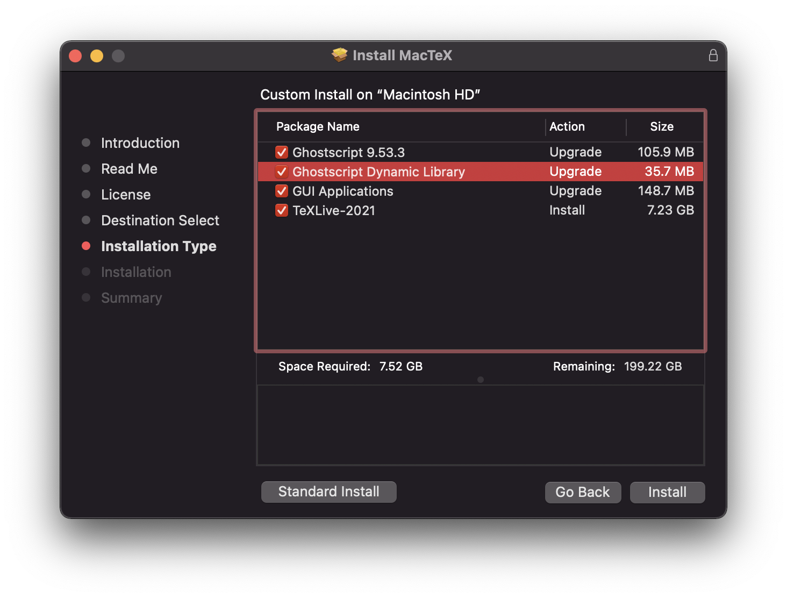
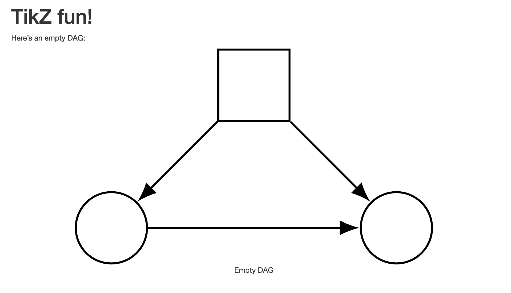
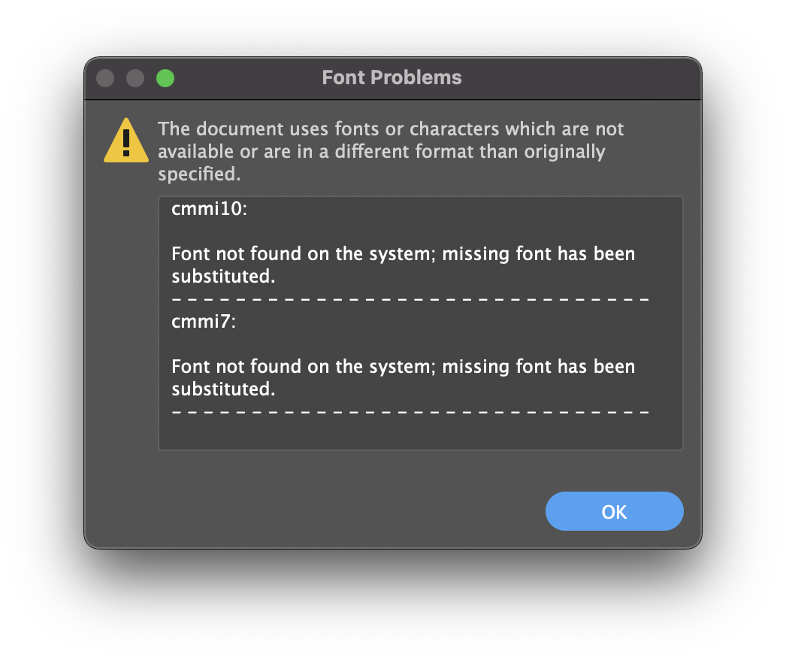
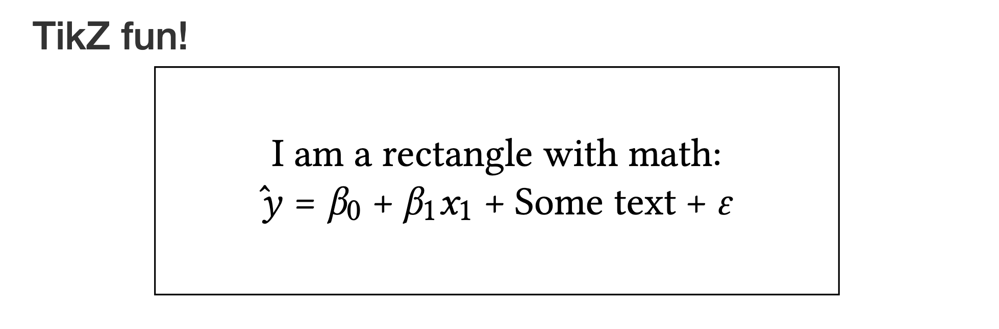
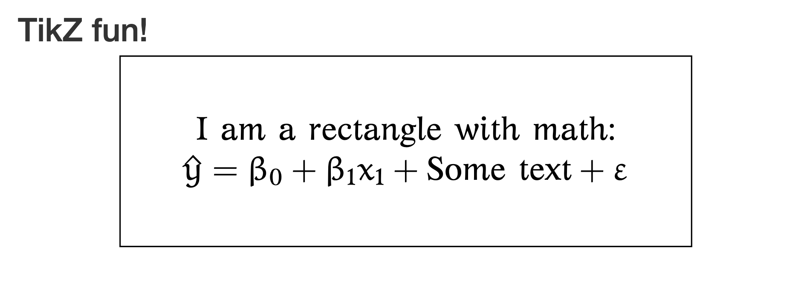

How to automatically convert TikZ images to SVG (with fonts!) from knitr
Contents:
- Knitting TikZ chunks to PDF
- Knitting TikZ chunks to HTML as PNGs
- Knitting TikZ chunks to HTML as SVGs
- tl;dr: Final working version
- UPDATE: Easier font embedding!
- ANOTHER UPDATE: Changing fonts!
knitr and R Markdown are essential parts of my academic writing workflow, and they make it really easy to write in one file format and then convert it to whatever output I need. When knitting to PDF, plots are all vector-based with selectable text, and math equations are all done in beautiful LaTeX. When knitting to HTML, plots are PNG files (since HTML struggles with cross-browser vector image support), and math equations are all done in beautiful MathJax. It’s a wonderful system.
One place where the system struggles, though, is with more complex types of content like TikZ figures. TikZ lets you make all sorts of fancy diagrams and equations, but it’s a tricky language and I barely understand it, lol. There are some helpful resources about it, though:
- Rachel Menghua Wu’s crash course to TikZ (part 1 and part 2)
- Overleaf’s guide
- Overleaf’s tutorial series
- Mathcha can draw and export diagrams as TikZ, as can DAGitty
Through the magic of knitr and R Markdown, it’s actually possible to use TikZ chunks directly in an R Markdown document and have them knit to both PDF and vector-based SVG files in HTML. Magic!
Knitting TikZ chunks to PDF
knitr has the ability to use custom engines for rendering other languages, including TikZ, by including a tikz chunk like this:
```{tikz}
\begin{tikzpicture}
% TikZ code here
\end{tikzpicture}
```
To try this out, make a new blank .Rmd file and put this in it:
(Side note: Syntax highlighting R Markdown files is tricky because they involve so many different possible languages (YAML, Markdown, R, Python, tikz, etc.), but GitHub Gists can highlight them just fine. So all these code chunks here are actually embedded Gists. If you have JavaScript enabled, or if GitHub shuts down Gist some day, or if you otherwise can’t see them, you can see the original gists here), or you can see them in the GitHub repository for this website here)
Knit that to PDF and you’ll see a neat little diagram of a directed acyclic graph (or DAG) (see full PDF here):

Knitting TikZ chunks to HTML as PNGs
If you knit that document to HTML, you’ll also see the same diagram, but it will be a low resolution PNG and will look huge and pixelated. Behind the scenes, knitr converts the TikZ chunk to PDF and then converts that PDF to PNG and includes it in the HTML file (see full HTML file here).

There’s theoretically a way to change the DPI of this PNG file using the engine.opts chunk option and passing additional arguments to ImageMagick, which handles the conversion, but it only causes errors for me (Error in magick_image_format(image, toupper(format), type, colorspace, : Invalid ImageType value: -density 300) and I can’t figure out why (see this StackOverflow post too) :
```{tikz, engine.opts = list(convert.opts = '-density 300'), fig.ext="png"}
% Stuff here
```
Knitting TikZ chunks to HTML as SVGs
But even if I could get it to work, PNG files aren’t great for vector-like things like TikZ diagrams. It would be great if instead I could convert these diagrams to vector-based SVG files.
Fortunately knitr handles that too! Try this! (Note the self_contained: no in the YAML metadata—this will create a standalone DVI and SVG file in a folder named <NAME_OF_RMD>_files/html-figures/. You don’t technically need this—without it, R will embed the images as base64-encoded text—but to make it easier to see the files R makes, we’ll disable it)
You’ll most likely get an error about Ghostscript:
processing of PostScript specials is disabled (Ghostscript not found)
Connecting dvisvgm to Ghostscript on macOS
Unfortunately it takes a little bit of initial setup to get all the moving pieces working for it to happen. To go from TikZ to SVG, knitr first converts the tikz chunk to DVI and then uses the terminal program dvisvgm to convert the DVI to SVG. Getting dvisvgm working on macOS is tricky though (and presumably it’s tricky on Windows too, but I don’t have a Windows machine to test it on).
The most typical way of installing the LaTeX ecosystem on macOS is to install MacTeX, which comes with all the dozens of special utilities TeX uses for typesetting. MacTeX comes with both dvisvgm and a special program called Ghostscript that handles text in DVI files. HOWEVER, by default it does not provide a way to have dvisvgm and Ghostscript talk to each other (there’s a whole post about it here). Ghostscript really is installed, though—dvisvgm just can’t see it.
To fix it, you actually need to reinstall MacTex and choose a custom installation option. When you get to the “Installation Type” section in the package installation dialog box, click on “Customize” and then make sure the box is checked for “Ghostscript Dynamic Library”. By default this is not checked, and I have no clue why, since this is the bridge that you need to get dvisvgm and Ghostscript to talk to each other.

Install MacTeX with that option enabled and you’ll have a special new file nested deep within your filesystem at /usr/local/share/ghostscript/9.53.3/lib/libgs.dylib.9.53. This libgs.dylib.** file is the dynamic library that dvisvgm needs to know about to work. MacTex 2021 installs Ghostscript 9.53.3, so later versions of MacTex will place libgs.dylib somewhere else.
To tell dvisvgm where this dynamic library is, you then need to set an environment variable. Open ~/.bash_profile or ~/.zshrc or whatever you use for setting your PATH and other terminal settings and add this:
export LIBGS=/usr/local/share/ghostscript/9.53.3/lib/libgs.dylib.9.53
Open a new terminal window and type print $LIBGS to verify that the environment variable was actually set. Now you should be able to run dvisvgm -l and see an entry for ps in it (see this FAQ page for lots of other details and help for troubleshooting this):
$ dvisvgm -l
...
ps dvips PostScript specials
...
That means everything’s working and you should now be able to convert from DVI to SVG!
Connecting dvisvgm to Ghostscript within R
However, RStudio doesn’t pick up your shell’s environment variables when knitting files, so if you knit the document with fix.ext='svg' enabled, you’ll still get an error about Ghostscript not being found.
To get around this, you can actually set environment variables from within the R Markdown document itself. Add Sys.setenv() to an invisible chunk like this:
And now everything should work! You’ll get an HTML file with a vector-based SVG version of the TikZ figure (see full HTML file here):

Choosing the TikZ output format based on the knitted output
We can now knit this TikZ chunk to PDF if we use fig.ext="pdf" and to SVG if we use fig.ext="svg" in the chunk options. Remembering to switch these extensions manually, though, is tedious. To make life a little easier, we can create some conditional output types using knitr’s (newer?) opts-template ability, which lets you create chunk option templates that you can reuse throughout the document. Here, we’ll use fig.ext="pdf" when knitting to PDF, and fig.ext="svg" otherwise. If I could get the TikZ → PNG conversion working nicely, I’d make it use fig.ext="png" when knitting to Word, too.
Now if you knit that file ↑ to PDF, it will create a PDF TikZ image; if you knit to HTML, it will create an SVG image through dvisvgm. Magic!
Font issues
You’ll notice that we’ve only been using text-less TikZ figures as an example so far. TikZ handles text just fine—it processes it through LaTeX and lets you do everything regular LaTeX typesetting does, so you can add fancy equations and Greek letters, etc. to diagrams. Let’s add some letters with subscripts:
When knitting to PDF, this diagram looks great, typeset in Computer Modern like any standard LaTeX document(see full PDF here):

When knitting to HTML, the SVG version of the diagram also works, except for the fonts, since dvisvgm doesn’t embed the fonts by default (see full HTML file here):

If you open the SVG file that R generates (find it at <RMD_filename>_files/figure-html/unnamed-chunk-1-1.svg) in something like Illustrator, it will complain about font references that are missing, like cmmi10 and cmmi7:

And if you open the SVG file in a text editor you’ll notice references to font names, but those assume that you have fonts named “cmmi7” and “cmmi10” on your computer, which is doubtful:
...
<font id='cmmi7' horiz-adv-x='0'>
<font-face font-family='cmmi7' units-per-em='1000' ascent='750' descent='250'/>
...
Font solutions
Fortunately there’s a solution! dvisvgm has an optional flag (--font-format=woff) that will embed the special LaTeX fonts using a base64-encoded web-optimized WOFF file, which means the SVG file should show the correct fonts in any modern browser or editor.
However, there’s currently not a direct way to use that flag with knitr. The command for dvisvgm is hardcoded into knitr’s code and you can’t add any extra arguments (though I’ve opened an issue at GitHub about this).
But never fear! There’s a neat roundabout way around this!
You can use special chunk hooks in knitr to run functions before or after chunks are rendered. We can create a function that runs after a TikZ chunk is rendered that takes the temporary DVI file that knitr creates and then runs dvisvgm --font-format=woff on it, thus overwriting the non-embedded SVG file that knitr makes with its hardcoded dvisvgm command. Here’s one way to do it (which I adapted from the built-in hook_png() function):
embed_svg_fonts <- function(before, options, envir) {
# !before means after the chunk is run
if (!before) {
# Get a list of all the plot files this chunk makes
paths <- knitr:::get_plot_files()
# Loop through all the plot files. When dealing with SVG, knitr actually
# creates two different files: an initial DVI and the converted SVG. We'll
# use the original DVI and pass it through dvisvgm again, this time with
# --font-format=woff enabled. This will overwrite the SVG that knitr makes
knitr:::in_base_dir(
lapply(paths, function(x) {
message("Embedding fonts in ", x)
path_svg <- xfun::with_ext(x, "svg")
path_dvi <- xfun::with_ext(x, "dvi")
if (system2('dvisvgm', c('--font-format=woff', '-o', shQuote(path_svg), shQuote(path_dvi))) != 0)
stop('Failed to convert ', path_dvi, ' to ', path_svg)
})
)
}
}
# Register the function as a possible hook
# Use this in a chunk by setting embed_svg_fonts=TRUE in the chunk options
knitr::knit_hooks$set(embed_svg_fonts = embed_svg_fonts)
Stick that ↑ in an invisible chunk (probably in the same one with Sys.setenv(LIBGS = "blah")), and then add embed_svg_fonts=TRUE to the chunk options of the TikZ chunk, and it should work. When you knit, you’ll see two messages about converting DVI to SVG. We don’t care about the first—that’s knitr’s basic version without embedded fonts. The second message corresponds to the command we created with the hook, which includes --font-format=woff.
Here’s what the SVG file looks like now with the fonts embedded in it (see full SVG file here):
{kind=link}
tl;dr: Final working version
Here’s what your final R Markdown file should look like:
When knitting to PDF, the TikZ figure will show up as a regular PDF image, as excepted. When knitting to HTML, though, knitr will create a DVI version of the image and then convert that to SVG (but without font embedding enabled in dvisvgm). Then finally, because of the post-rendering hook, knitr will run the embed_svg_fonts() function on the DVI and create a new SVG with fonts embedded that will overwrite the original SVG file.
Look at that! So great! (see full HTML file here):

UPDATE: Easier font embedding!
I submitted a pull request to knitr that would allow users to specify additional arguments to dvisvgm from a chunk, and it was just merged in, so with the development version of knitr (and someday with the CRAN version, once a new version is eventually submitted), you can use the dvisvgm.opts option in the engine.opts chunk options like this:
```{tikz, fig.ext="svg", engine.opts=list(dvisvgm.opts = "--font-format=woff")}
% Stuff here
```
So now there’s no need for the embed_svg_fonts() hook function! This should work now for the complete DAG example:
ANOTHER UPDATE: Changing fonts!
You’re not limited to the default (and kinda ugly) Computer Modern font with TikZ chunks, but changing the font is a little tricky becuase each TikZ chunk in knitr is treated as a standalone LaTeX document, so you need to adjust the fonts in each chunk.
Knitting only to PDF
If you’re only interested in knitting to PDF, you can use XeTeX to embed any font you want in the diagram. When using XeTeX, you’d typically add something like this to the preamble of your document to change the document font:
\usepackage{fontspec}
\setmainfont{Comic Sans MS} % ew
Each standalone TikZ knitr chunk gets passed to a special tikz2pdf.tex template. The content of the chunk is inserted in the %% TIKZ_CODE %% area, and there’s a space in the template for preamble things at %% EXTRA_TIKZ_PREAMBLE_CODE %%. To get content inserted there, you can use the extra.preamble option in engine.opts like so:
```{tikz, engine.opts=list(extra.preamble=c("\\usepackage{fontspec}", "\\setmainfont{Comic Sans MS}"))}
% Stuff here
```
That won’t work right away though. When you knit, knitr uses the default pdflatex LaTeX engine to render each TikZ chunk, and you’ll get an error because fontspec only works with XeTeX. You can tell knitr to use xelatex to render those chunks if you set the tinytex.engine option:
options(tinytex.engine = "xelatex")
Once you set xelatex as the default LaTeX engine for the document, all TikZ chunks will render correctly. Here’s a complete example (note that I moved the extra.preamble stuff to a separate variable so that it’s easier to reuse) (see full PDF here):

Knitting to PDF and HTML
This is a little trickier if you want to convert these TikZ chunks to SVG when knitting to HTML. knitr ignores the tinytex.engine option when you knit to HTML, so there’s no way to tell TikZ chunks to get processed through xelatex. Additionally, xelatex does not produce .dvi files, which dvisvgm uses to convert to SVG. xelatex instead creates its own special .xdv files. In theory, newer versions of dvisvgm should work with XDV files, but knitr is hard-coded to pass DVI files to dvisvgm, not XDV files. So even if we could force TikZ chunks to go through xelatex, they wouldn’t be converted to SVG. Alas.
But all is not lost! It’s possible to change fonts in non-XeTeX documents. Because you’re limited to whatever pdflatex can support, you can only use specific font packages instead of whatever font you want. For instance, to use TEX Gyre Pagella, include \usepackage{tgpagella} in your preamble. See this for a basic list of possible font packages, or this for a pretty complete catalogue.
For instance, here’s how to use Linux Libertine for text and Libertinus Math for math with embedded SVG fonts when knitting to HTML (see full HTML file here):

Or with GFS Artemisia with Euler for math (see full HTML file here):
